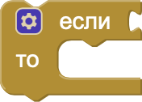
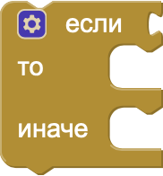
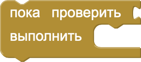
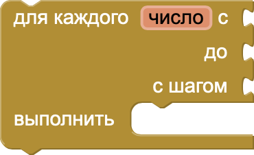
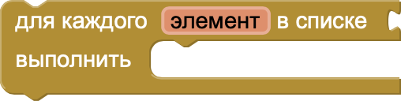
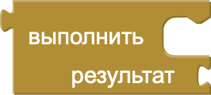

Блоки управления в MIT App Inventor
Блоки управления в MIT App Inventor позволяют задавать логику выполнения программ. Они помогают организовать поток выполнения, управлять условиями и циклами, и многое другое.
- if и else if (если и иначе если): этот блок позволяет задавать условия, при выполнении которых происходит выполнение определённых действий. Например:
- while (пока): Этот блок выполняет действия повторно, пока заданное условие остаётся истинным (true). Как только условие становится ложным (false), цикл прекращает выполнение.
- for each number from to (для каждого числа от... до...): Этот блок выполняет действия для каждого числа в указанном диапазоне, начиная с начального значения и заканчивая конечным, с заданным шагом.
- for each item in list (для каждого элемента в списке): Этот блок выполняет действия для каждого элемента из списка по порядку.
- open another screen (открыть другой экран): Этот блок используется для перехода на другой экран в приложении.
- do with result (выполнить с результатом): Этот блок используется для выполнения действия с результатом вызова функции или операции.
- get plain start text (получить начальный текст) и get start value (получить начальное значение): Этот блок возвращает значение, переданное на текущий экран при его открытии.
- close screen (закрыть экран): Этот блок закрывает текущий экран и возвращает пользователя на предыдущий экран.
- close application (закрыть приложение): Этот блок завершает работу приложения и закрывает его полностью.
- break (прервать): Этот блок используется для немедленного выхода из цикла, даже если условие продолжения ещё истинно.
Блоки 2-го уровня первого типа

Если (условие), то
–– выполнить действие

–– выполнить действие
Если (условие), то
–– выполнить действие
Иначе
–– выполнить другое действие
–– выполнить действие
Иначе
–– выполнить другое действие

Пока (условие)
-– выполнять действие
-– выполнять действие

Для каждого числа от (начало)
до (конец)
с шагом (шаг)
-– выполнять действие
до (конец)
с шагом (шаг)
-– выполнять действие

Для каждого элемента в списке (список)
-– выполнять действие
-– выполнять действие
Открыть другой экран (имя экрана)
Блоки 2-го уровня второго типа

Выполнить с результатом (действие)
-– использовать результат для выполнения другого действия
-– использовать результат для выполнения другого действия
Блоки 3-го уровня
-– использовать текст для выполнения действия
-– использовать значение для выполнения действия
-– Закрыть экран
–– Закрыть приложение
-– Прервать цикл